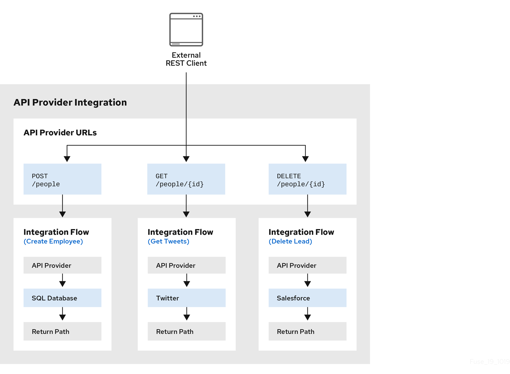

How OpenAPI operations relate to API provider integration flows
An API provider integration’s OpenAPI document defines the operations that REST API clients can call. Each OpenAPI operation has its own API provider integration flow. Consequently, each operation can also have its own REST API service URL. Each URL is defined by the API service’s base URL and optionally by a subpath. REST API calls specify an operation’s URL to trigger execution of the flow for that operation.
Your OpenAPI document determines which HTTP verbs (such as
GET, POST, DELETE and so on) you can specify
in calls to your REST API service URLs. Examples of calls to
API provider URLs are in the
instructions for trying out the API provider quickstart example.
Your OpenAPI document also determines the possible HTTP status codes that an operation can return. An operation’s return path can handle only the responses that the OpenAPI document defines. For example, an operation that deletes an object based on its ID might define these possible responses:
"responses": {
"204": {
"description": "Task deleted"
},
"404": {
"description": "No Record found with this ID"
},
"500": {
"description": "Server Error"
}
}The following diagram shows an API provider integration that processes data about people. An external REST API client invokes the REST API URLs that are deployed by the API provider integration. Invocation of a URL triggers execution of the flow for one REST operation. This API provider integration has 3 flows. Each flow can use any connection or step that is available in {prodname}. The REST API along with its flows is one {prodname} API provider integration, which is deployed in one OpenShift pod.

After you specify an OpenAPI document for your API provider integration, you can update the document as needed while you define the execution flows for the API operations. To do this, click View/Edit API Definition in the upper right of a page in which you are editing the API provider integration. This displays your OpenAPI document in the API Designer editor. Edit and save the document to make changes that are reflected in {prodname}.
Considerations while editing the OpenAPI document:
-
operationIdproperties for synchronizationSynchronization between the versions of the OpenAPI document in the API Designer editor and in the {prodname} integration editor depend on a unique
operationIdproperty that is assigned to each operation that is defined in the document. You can assign a specificoperationIdproperty value to each operation, or use the one that {prodname} generates automatically. -
Request and response definitions
In each operation’s definition, you can supply a JSON schema that defines the operation’s request and response. {prodname} uses the JSON schema:
-
As the basis for the operation’s input and output data shapes
-
To display operation fields in the data mapper
-
-
No cyclic schema references
A JSON schema for an API provider integration operation cannot have cyclic schema references. For example, a JSON schema that specifies a request or response body cannot reference itself as a whole nor reference any part of itself through intermediate JSON schemas.